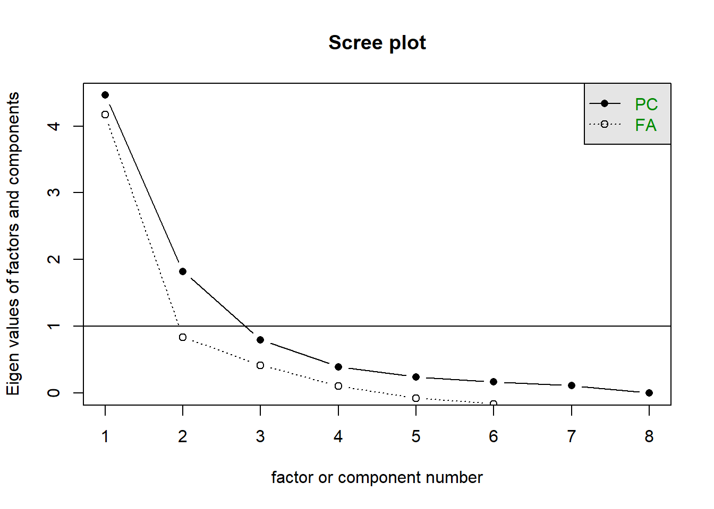
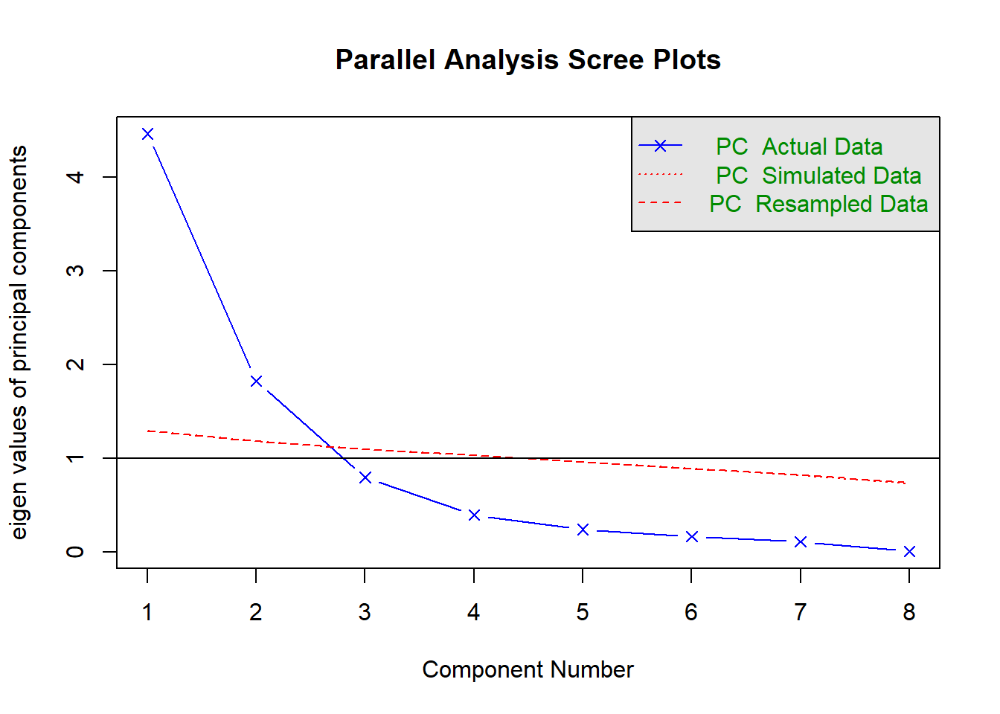

Using principal() from the {psych} package, with 8 observed variables, we are working in 8 observed dimensions (our measured variables). These variables are all correlated, and PCA re-expresses the information onto un-correlated (i.e. perpendicular) dimensions.
With 8 measured variables, we get out 8 orthogonal dimensions, which here we call “principal components”.
In the principal() function, we can set nfactors = 8 to extract 8 dimensions. If we specified a lower number, e.g., nfactors = 6, it would simply not show the 7th and 8th components.
Setting rotate = "none" ensures that these new dimensions are orthogonal to one another.
The first component captures 55.8%
The first two components capture 78.6% The first three components capture 88.5%
… … All eight components capture 100%
Scree Plot
The screeplot shows a possible kink at either the second or third, indicating that we keep either 1 or 2.
cor(physfunc) |>scree()

Minimum Average Partial (MAP)
There’s a lot of output from VSS() and we’re only really interested in the map values, so let’s pull those out.
We can see that the first value is lowest, suggesting 1 component:
VSS(physfunc, n =8, rotate ="none", plot =FALSE)$map
[1] 0.137 0.152 0.188 0.279 0.426 0.835 1.000 NA
Parallel Analysis
This approach suggests 2 components:
fa.parallel(physfunc,fa ="pc",n.iter =500)

Parallel analysis suggests that the number of factors = NA and the number of components = 2
Let’s suppose that we decide to retain two components, capturing 79% of the total variance: